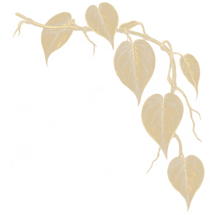

<!doctype html>
<html lang="en">

<head>
  <meta charset="utf-8">
  <meta name="viewport" content="width=device-width, initial-scale=1">
  <!-- The iPad on the counter, not a page for guests: kept out of search. -->
  <meta name="robots" content="noindex, nofollow">
  <title>Beanery</title>
  <meta name="apple-mobile-web-app-capable" content="yes">
  <meta name="mobile-web-app-capable" content="yes">
  <meta name="apple-mobile-web-app-title" content="Beanery">
  <meta name="theme-color" content="#183027">
  <link rel="icon" href="../favicon.svg" type="image/svg+xml">
  <link rel="apple-touch-icon" href="../favicon.svg">
  <link rel="preload" href="assets/bodoni-moda-latin.woff2" as="font" type="font/woff2" crossorigin>
  <style>
    /*
     * The counter iPad, held sideways: the menu on the left 70%, the loyalty
     * card QR on the right 30%. The menu is the live /menu/ page in a frame,
     * so prices and items only ever change in one place.
     */
    @font-face {
      font-family: "Bodoni Moda";
      src: url(assets/bodoni-moda-latin.woff2) format("woff2");
      font-weight: 400 600;
      font-display: swap;
    }

    :root {
      --bg: #183027;
      --gold: #d6ba84;
      --cream: #f3e7d3;
      --paper: #f7efe1;
      --sans: -apple-system, BlinkMacSystemFont, "Segoe UI", system-ui, sans-serif;
    }

    html,
    body {
      height: 100%;
      margin: 0;
      overflow: hidden;
      background: var(--bg);
      -webkit-text-size-adjust: 100%;
      touch-action: manipulation;
    }

    .stand {
      display: flex;
      width: 100%;
      height: 100vh;
      height: 100dvh;
      overflow: hidden;
    }

    .stand__menu {
      position: relative;
      flex: 0 0 70%;
      min-width: 0;
      background: #fbf6ea;
    }

    .stand__menu iframe {
      display: block;
      width: 100%;
      height: 100%;
      border: 0;
    }

    .stand__card {
      position: relative;
      flex: 0 0 30%;
      min-width: 0;
      overflow: hidden;
      color: var(--cream);
      background: var(--bg) url(assets/surface-green-leather.webp) center / cover;
      font-family: var(--sans);
      -webkit-user-select: none;
      user-select: none;
      -webkit-touch-callout: none;
    }

    .card__frame {
      position: absolute;
      inset: 12px;
      overflow: hidden;
      border: 1px solid var(--gold);
      border-radius: 24px;
    }

    .leaf {
      position: absolute;
      width: clamp(104px, 10.5vw, 150px);
      height: auto;
      opacity: 0.46;
      pointer-events: none;
    }

    .leaf--te { top: -12px; right: -14px; }
    .leaf--ts { top: -12px; left: -14px; transform: scaleX(-1); }
    .leaf--bs { bottom: -12px; left: -14px; transform: rotate(180deg); }
    .leaf--be { bottom: -12px; right: -14px; transform: rotate(180deg) scaleX(-1); }

    .card__in {
      position: absolute;
      inset: 0;
      display: flex;
      flex-direction: column;
      align-items: center;
      justify-content: center;
      padding: 20px 16px;
      text-align: center;
    }

    .card__top,
    .card__bottom {
      display: flex;
      flex-direction: column;
      align-items: center;
      max-width: 100%;
    }

    .card__in p {
      margin: 0;
    }

    .card__in img {
      pointer-events: none;
    }

    .card__crest {
      width: 48px;
      height: auto;
      max-height: 62px;
      object-fit: contain;
    }

    .card__name {
      margin-top: 6px !important;
      font: 500 clamp(30px, min(5.4vh, 3.8vw), 50px) / 1.02 "Bodoni Moda", Georgia, serif;
      letter-spacing: -0.025em;
    }

    .card__kind {
      display: flex;
      align-items: center;
      gap: 10px;
      margin-top: 6px !important;
      font-size: 11px;
      letter-spacing: 0.34em;
      text-transform: uppercase;
      color: var(--gold);
    }

    .card__kind i {
      display: block;
      width: 44px;
      height: 1px;
      background: var(--gold);
      opacity: 0.7;
    }

    .card__head {
      margin-top: clamp(10px, 2.4vh, 22px) !important;
      font: italic 500 clamp(20px, min(3.3vh, 2.15vw), 31px) / 1.15 "Bodoni Moda", Georgia, serif;
    }

    .card__head.is-ar {
      margin-top: 4px !important;
      font: 500 clamp(18px, 2.6vh, 24px) / 1.3 var(--sans);
    }

    .card__plate {
      width: min(300px, 33vh, calc(100% - 16px));
      aspect-ratio: 1 / 1;
      box-sizing: border-box;
      margin-top: clamp(10px, 2.2vh, 20px);
      padding: clamp(12px, 2vh, 18px);
      border-radius: 20px;
      background: var(--paper);
      box-shadow: 0 14px 26px rgba(0, 0, 0, 0.42);
    }

    .card__plate img {
      display: block;
      width: 100%;
      height: 100%;
    }

    .card__step {
      margin-top: clamp(10px, 2.2vh, 20px) !important;
      font-size: clamp(16px, 2vh, 19px);
      line-height: 1.3;
    }

    .card__step.is-ar {
      margin-top: 3px !important;
      font-size: clamp(17px, 2.1vh, 20px);
    }

    .card__offer {
      margin-top: clamp(6px, 1.4vh, 12px) !important;
      font-size: clamp(13px, 1.6vh, 15px);
      line-height: 1.3;
      color: var(--gold);
    }

    .card__offer.is-ar {
      margin-top: 2px !important;
    }

    /* Upright iPad: menu on top, a wide band below with the QR beside the words. */
    @media (orientation: portrait) {
      .stand {
        flex-direction: column;
      }

      .stand__menu {
        flex: 0 0 70%;
      }

      .stand__card {
        flex: 0 0 30%;
      }

      .card__in {
        display: grid;
        grid-template-columns: auto minmax(0, auto);
        grid-template-rows: auto auto;
        align-content: center;
        justify-content: center;
        column-gap: clamp(24px, 5vw, 48px);
        padding: 16px 24px;
      }

      .card__plate {
        grid-column: 1;
        grid-row: 1 / span 2;
        align-self: center;
        width: min(250px, calc(30dvh - 72px));
        margin: 0;
      }

      .card__top {
        grid-column: 2;
        grid-row: 1;
        align-self: end;
      }

      .card__bottom {
        grid-column: 2;
        grid-row: 2;
        align-self: start;
      }

      .card__crest,
      .card__kind {
        display: none;
      }

      .card__name {
        margin-top: 0 !important;
        font-size: clamp(28px, 4vw, 40px);
      }

      .card__head {
        font-size: clamp(20px, 3vw, 28px);
      }
    }
  </style>
</head>

<body>
  <div class="stand">
    <section class="stand__menu">
      <!-- No top navigation and no popups: the menu cannot take the screen over. -->
      <iframe id="menu" src="/menu/" title="Beanery menu" sandbox="allow-scripts allow-same-origin"></iframe>
    </section>

    <aside class="stand__card" aria-label="Loyalty card">
      <div class="card__frame">
        
        
        
        
        <div class="card__in">
          <div class="card__top">
            
            <p class="card__name">Beanery</p>
            <p class="card__kind"><i></i><span>Cafe</span><i></i></p>
            <p class="card__head" lang="en">Get your loyalty card</p>
            <p class="card__head is-ar" lang="ar" dir="rtl">احصل على بطاقة الأختام</p>
          </div>
          <div class="card__plate">
            
          </div>
          <div class="card__bottom">
            <p class="card__step" lang="en">Scan with your phone camera</p>
            <p class="card__step is-ar" lang="ar" dir="rtl">امسح الرمز بكاميرا هاتفك</p>
            <p class="card__offer" lang="en">Buy 8, the next one is free.</p>
            <p class="card__offer is-ar" lang="ar" dir="rtl">اشترِ 8، ويكون التالي مجانيًا.</p>
          </div>
        </div>
      </div>
    </aside>
  </div>

  <script>
    (function () {
      'use strict';

      var IDLE_MS = 90 * 1000;          // no touch for this long: the menu goes back to the top
      var RELOAD_MS = 60 * 60 * 1000;   // about once an hour, when nobody is using it, reload for menu changes
      var MENU_PATH = '/menu/';

      var frame = document.getElementById('menu');
      var loadedAt = Date.now();
      var lastTouch = Date.now();
      var tidied = true;
      var wake = null;

      function touched() {
        lastTouch = Date.now();
        tidied = false;
        keepAwake();
      }

      // The screen stays on while the page is up (Safari 16.4+). Auto-Lock
      // set to Never on the iPad does the same job if this is refused.
      function keepAwake() {
        if (wake || !navigator.wakeLock || document.visibilityState !== 'visible') return;
        navigator.wakeLock.request('screen').then(function (w) {
          wake = w;
          w.addEventListener('release', function () { wake = null; });
        }, function () { /* refused: Auto-Lock decides */ });
      }

      // The menu is this site's own page, so the frame can reach into it: the
      // links that leave the menu are hidden and refused here, and the menu
      // itself stays exactly as guests see it on their phones.
      function tameMenu() {
        var win, doc;
        try {
          win = frame.contentWindow;
          doc = frame.contentDocument;
          if (win.location.pathname !== MENU_PATH) throw new Error('left the menu');
        } catch (e) {
          frame.src = MENU_PATH;
          return;
        }
        if (!doc || !doc.head || doc.getElementById('standRules')) return;
        var style = doc.createElement('style');
        style.id = 'standRules';
        style.textContent = '.mhead__back,.mfoot__link,.mfoot__credit{display:none!important}';
        doc.head.appendChild(style);
        doc.addEventListener('click', function (e) {
          var a = e.target.closest && e.target.closest('a[href]');
          if (!a) return;
          var url = new URL(a.href, doc.baseURI);
          if (url.origin !== location.origin || url.pathname !== MENU_PATH) e.preventDefault();
        }, true);
        ['pointerdown', 'touchstart', 'keydown', 'input', 'wheel'].forEach(function (name) {
          doc.addEventListener(name, touched, { passive: true, capture: true });
        });
      }

      // The next customer finds the menu at the top, with no search left in it.
      function tidyMenu() {
        var win, doc;
        try {
          win = frame.contentWindow;
          doc = frame.contentDocument;
        } catch (e) {
          return;
        }
        if (!win || !doc) return;
        var q = doc.getElementById('q');
        if (q && q.value) {
          q.value = '';
          q.dispatchEvent(new Event('input', { bubbles: true }));
        }
        if (doc.activeElement && doc.activeElement.blur) doc.activeElement.blur();
        if (win.scrollY > 0) win.scrollTo({ top: 0, behavior: 'smooth' });
      }

      // Only when the site answers: a reload with the line down would leave
      // Safari's error page on the counter.
      function reloadIfOnline() {
        fetch(MENU_PATH, { method: 'HEAD', cache: 'no-store' }).then(function (r) {
          if (r.ok) location.reload();
        }, function () { /* offline: keep what is on screen */ });
      }

      frame.addEventListener('load', tameMenu);
      ['pointerdown', 'touchstart', 'keydown'].forEach(function (name) {
        document.addEventListener(name, touched, { passive: true, capture: true });
      });
      document.addEventListener('visibilitychange', keepAwake);
      document.addEventListener('contextmenu', function (e) {
        if (e.target.closest && e.target.closest('.stand__card')) e.preventDefault();
      });

      setInterval(function () {
        var idle = Date.now() - lastTouch;
        if (idle < IDLE_MS) return;
        if (!tidied) {
          tidied = true;
          tidyMenu();
        }
        if (Date.now() - loadedAt >= RELOAD_MS) reloadIfOnline();
      }, 15000);

      keepAwake();
    })();
  </script>
</body>

</html>
